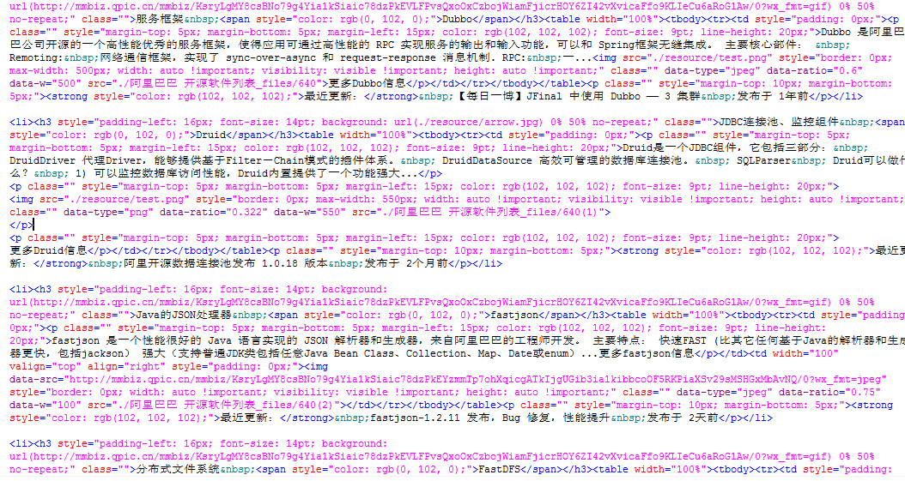

Druid是一个JDBC组件，它包括三部分： DruidDriver 代理Driver，能够提供基于Filter－Chain模式的插件体系。 DruidDataSource 高效可管理的数据库连接池。 SQLParser Druid可以做什么？ 1) 可以监控数据库访问性能，Druid内置提供了一个功能强大...

更多Druid信息
最近更新： 阿里开源数据连接池发布 1.0.18 版本 发布于 2个月前